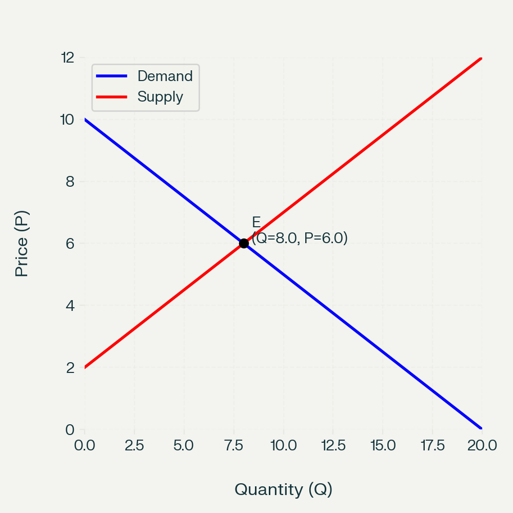
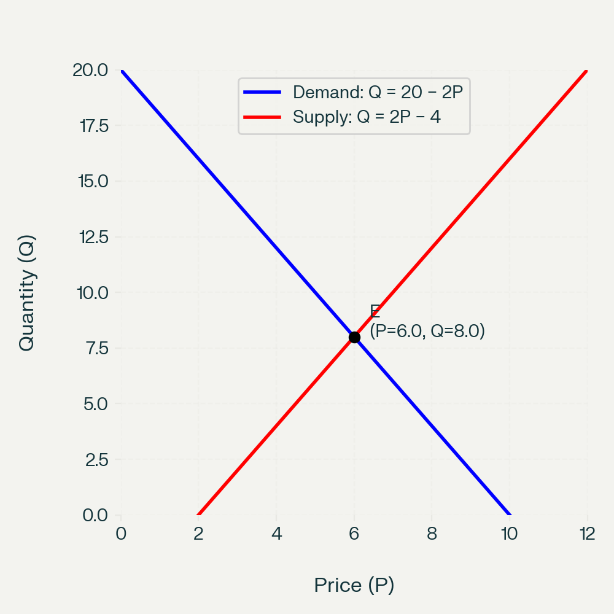

Why Are Price and Quantity Plotted This Way in Supply–Demand Diagrams?
A Note for Teachers and Advanced Students
1 Question
In mathematics and most sciences, we are taught to put the independent variable on the x‑axis and the dependent variable on the y‑axis.
Yet in introductory economics, supply and demand diagrams have:
- Price (P) on the vertical (y) axis
- Quantity (Q) on the horizontal (x) axis
But we often say things like “quantity demanded depends on price” or “quantity supplied depends on price”.
Why, then, is quantity on the x‑axis and price on the y‑axis in standard supply–demand diagrams?
2 Teacher Explanation
2.1 1. It is mainly a historical convention
The standard diagram comes from Alfred Marshall’s Principles of Economics (1890). Marshall chose to draw:
- Quantity on the horizontal axis
- Price on the vertical axis
even though he understood that, mathematically, one can think of quantity demanded or supplied as a function of price.
Because Marshall’s textbook became so influential, this convention became standard in the Anglo‑American economics tradition. Later authors kept it for consistency and comparability, even though it goes against the usual maths convention.
So a large part of the answer is simply: this is how Marshall drew it, and everyone followed.
2.2 2. Economists are plotting inverse demand and supply
In many models we write:
- Demand: \(Q_d = D(P)\) – quantity demanded as a function of price
- Supply: \(Q_s = S(P)\) – quantity supplied as a function of price
But the diagram you see in class is actually drawing the inverse functions:
- Inverse demand: \(P = D^{-1}(Q)\) – the price consumers are willing to pay for each quantity
- Inverse supply: \(P = S^{-1}(Q)\) – the price producers need to supply each quantity
In Marshall’s way of thinking:
- For any given quantity \(Q\), the demand curve shows the maximum price consumers are willing to pay for that extra (marginal) unit.
- For any given \(Q\), the supply curve shows the minimum price producers need to be willing to supply that extra unit (their marginal cost).
So in that view:
- Quantity is treated as the “driver”: “If the market sells this much, what price does that imply on the demand side? On the supply side?”
- Price is the outcome variable that adjusts to equate quantity demanded and quantity supplied.
Thus, the diagram is consistent if you think of it as plotting price as a function of quantity, i.e. the inverse demand and inverse supply curves.
2.3 3. Two ways to draw the same curves
The same underlying relationships can be drawn in two orientations.
2.3.1 (A) Marshallian (economics) convention
Quantity on x‑axis, Price on y‑axis

This is the standard diagram used in almost all introductory economics textbooks and exams.
- Demand slopes downward: as \(Q\) increases, the marginal willingness to pay falls.
- Supply slopes upward: as \(Q\) increases, the marginal cost of production rises.
- Equilibrium \(E\) is where the two curves cross.
2.3.2 (B) Mathematics convention
Price as independent (x), Quantity as dependent (y)

Here we treat:
- \(Q_d = D(P)\) and \(Q_s = S(P)\) explicitly, with price on the horizontal axis and quantity on the vertical axis.
The curves represent the same relationships; they are just re‑expressed and re‑oriented.
2.4 4. Why don’t we switch to the “maths” convention?
You could teach supply and demand with price on the x‑axis and quantity on the y‑axis. Some advanced texts do this when it is convenient. But introductory economics keeps Marshall’s convention because:
- Standardisation: All textbooks, exam boards, and policy graphs use the same orientation, so everyone can read each other’s diagrams.
- Intuition about shifts: It is very visual to think of “demand shifts right” or “supply shifts right” and immediately see the new equilibrium price and quantity in the same layout.
- Surplus and elasticity: Concepts like consumer surplus, producer surplus, and elasticity are taught using this standard picture; changing axes would confuse learners more than it helps.
So the diagram is not wrong; it is just using a different but consistent convention that the whole discipline has adopted.
3 How to explain this to students
You might say:
- “In maths, we usually put the independent variable on the x‑axis. In economics, the supply–demand diagram is a historical convention from Marshall.”
- “The curves you see are really inverse functions: price as a function of quantity.”
- “Quantity is treated as the ‘given’, and price is the ‘resulting market price’ that clears the market.”
- “Everyone in economics uses this convention, so we stick with it to match textbooks, exams, and other economists’ graphs.”
If students ask, “So which is correct?” you can answer:
- “Both are mathematically fine. Economists have just agreed to use Marshall’s orientation for all the standard diagrams.”
4 Optional extension for advanced students
For more advanced classes, you can:
- Write demand as \(Q_d = a - bP\) and then derive the inverse demand \(P = \frac{a}{b} - \frac{1}{b}Q\).
- Show explicitly how the same line looks in both orientations.
- Discuss how some research papers and advanced texts switch axes depending on what is most convenient for the analysis.
This helps students see that the choice of axes is a modelling and presentation choice, not a deep truth about the relationship.